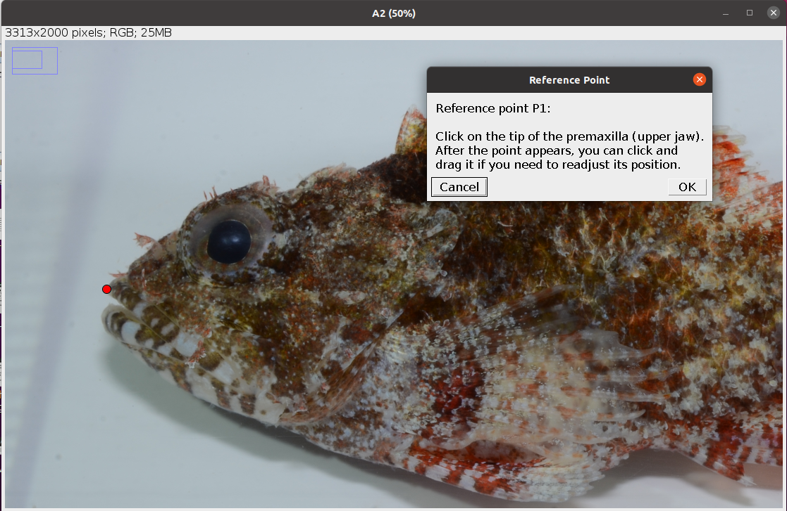

6 Head Angles
The Head Angles analysis allows to extract three angles (Figure 6.1, Table 6.1) related to vision and feeding (Brandl and Bellwood 2013; Bellwood et al. 2014; Brandl, Robbins, and Bellwood 2015) from the coordinates of some reference lines and points (Figure 6.2, Table 6.2).

| Code | Trait | Description | Reference |
|---|---|---|---|
| Ha | Head angle | The angle formed by a line connecting the tip of the premaxilla (P1) to the point where line L5 crosses the upper margin of the snout and a line connecting the latter point to the intersection between lines L3 and L4 | Brandl and Bellwood (2013) |
| Sa | Snout angle | The angle formed by the two lines drawn to the tip of the premaxilla (P1) from the point where line L5 crosses the upper and lower margins of the snout | Brandl and Bellwood (2013) |
| EMa | Eye-mouth angle | The angle formed by a line connecting the tip of the premaxilla (P1) to the eye centroid and a horizontal line intersecting P1 | Bellwood et al. (2014) |
| Reference line/point | Description | User input |
|---|---|---|
| P1 | Anterior tip of the premaxilla (upper jaw) | Yes |
| L1 | Horizontal line cutting the eye in halves | No1 |
| L2 | Vertical line cutting the eye in halves | No |
| L3 | Vertical line touching the anterior margin of the eye | No |
| L4 | Horizontal line touching the upper margin of the eye | No |
| L5 | Vertical line half way between L3 and P1 | No |
6.1 Analysis
Once the steps described in Section 2.2 are completed the screen will be populated with a number of windows:
- the ImageJ/Fiji main window
- the MorFishJ GUI
- a fish image (this is a duplicate of the raw image to prevent any modification)
- the ROI manager
- the
Image adjustmentdialog
This analysis has six steps that require the user input:
Adjust the image if necessary as described in Chapter 4.
Select the orientation of the fish (i.e., whether the fish is facing left or right) from a drop-down list. This step is important for the correct automatic placement of the reference lines.

- Place a point at the tip of the premaxilla (upper jaw) as shown below. After clicking
OKthis is saved in the ROI manager as P1.

- Trace an ellipse around the eye as shown below (see Elliptical Selection Tool for specific instructions on how to use this tool). After clicking
OKfive reference lines (L1-L5) are drawn.
- Place a point at the intersection between line L5 and the dorsal margin of the snout as shown below. After clicking
OKthe first angle (Ha) is drawn and saved in the ROI manager.

- Place a point at the intersection between line L5 and the ventral margin of the snout as shown below. After clicking
OKthe other two angles (Sa, EMa) are drawn and saved in the ROI manager.

The analysis of the image is completed. In case of single image analysis a window named Traits containing all the results appears. This can be saved by clicking on File -> Save As.... All ROIs in the ROI manager can also be saved as a zip file by clicking on More >>> -> Save.... In case of multiple image analysis a new row will be added to the results file, the ROIs are saved in their directory, where also the rotated or straightened images are saved as .jpg files. The current image is closed and the next is opened. Repeat steps 1-6 for all images.
6.2 Results
The results file/table contains one row for each image and 5 columns. The first column, image_id, is the name of the image without extension. The columns 2-4 are the angles described in Table 6.1 in degrees. The last column, time, is the time spent to analyse the image (steps 1-6) in seconds.
The user has to trace an ellipse around the eye and lines L1-L4 will be automatically drawn from the coordinates of this selection.↩︎